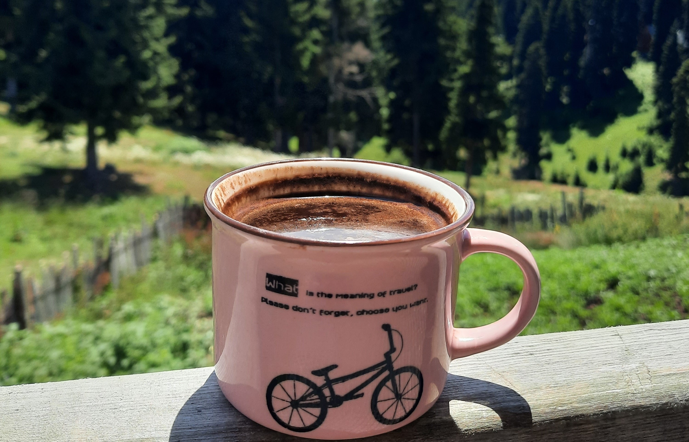
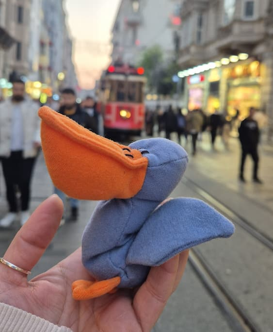

რას გთავაზობთ ამ ბლოგში :
რადგან ეს ჩემი პირველი ბლოგია, ჯერჯერობით მექნება ორი მიმართულება: მოგზაურობა და წიგნები. ორივე ჩემი ჰობია და მინდა ორივეს შესახებ ვისაუბრო. ყველაზე მთავარი ისაა, რომ ბლოგში გამოყენებული ყველა ფოტო ჩემივე გადაღებულია. მალე დავამატებ სხვა მიმართულებებსაც.


მოგზაურობა
მიყვარს მოვლენების ჩემეული ხედვით აღწერა, აქ მოგიყვებით ჩემს მოგზაურობებზე, თავგადასავლებსა და ემოციებზე და ჩემი თვალით დაგანახებთ სხვადასხვა ქვეყნებს (დიახ, მაგალითად ზოგიერთი 'ზე ტურისტული ადგილი მე არ მომეწონა და პირიქით, ნაკლებად ცნობილ ადგილებზე "გავგიჟდი")


წიგნები
წიგნებშიც ერთობ ჩემებური გემოვნება მაქვს, ვკითხულობ ყველა ჟანრს (დეტექტივის გარდა, ალბათ იურისტობის "ბრალია") და ამავდროულად, არ მაქვს საყვარელი ჟანრი, არც მაინცდამაინც ერთი პერსონაჟის, წიგნის ან ავტორის გამორჩევა შემიძლია...ყოველთვის რამდენიმეს ვირჩევ და თან ვასაბუთებ, რატომ... ხოდა, სწორედ ამ "რატომ"-ზე მოგიყვებით აქ